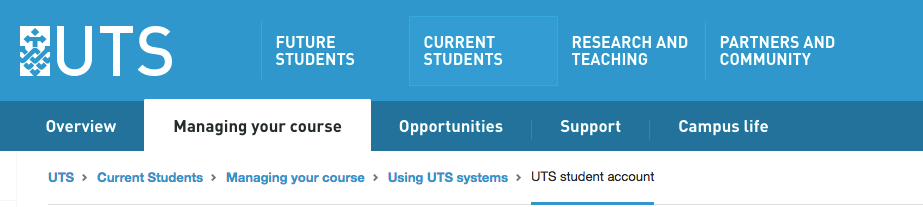
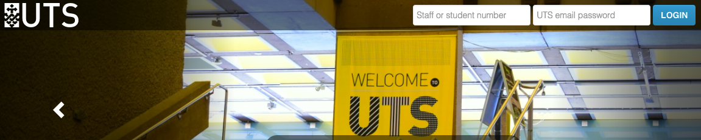
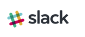
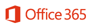
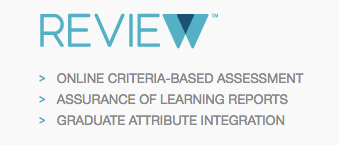
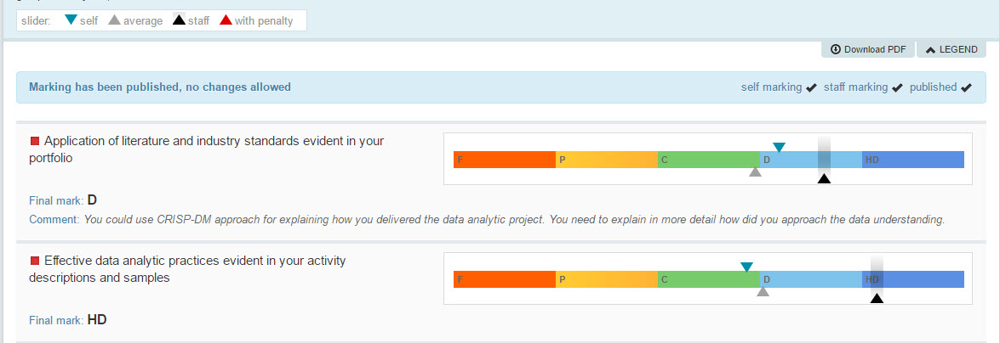
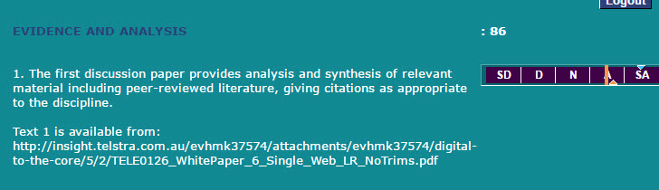

Chapter 3 A ‘survival guide’ to MDSI
3.1 First steps
3.1.1 Your UTS email:

First and foremost you need to activate your UTS email address. All official communications from UTS, subject notifications, MDSI newsletters etc will be sent to this email address. You need to activate your email address before you can access other UTS systems.
Activate your UTS Student email:
- Navigate to https://email.itd.uts.edu.au/webapps/myaccount/activation/ and follow the steps to activate your UTS student email account.
- ** Protip: ** If you don’t want to login frequently to check if you have mail, simply setup a email forwarding to an email address of your choice via the settings page after logging in.
For more general information about using UTS systems go to: http://www.uts.edu.au/current-students/managing-your-course/using-uts-systems/uts-student-account
3.1.2 Get your subject outlines:
 MDSI uses a variety of systems for online teaching and learning. UTSOnline and CICAround are the two primary environments for you to familiarise yourself with.
The first thing you need to do after activating your email address is to login to UTSOnline, access your subjects and find your subject outline. Your subject outline contains everything you need to know about your subject for the coming semester. It includes the contact information for your subject co-ordinator, important dates, assessment descriptions and much more. In most cases you can find the answer to any question you might have about your subject addressed in the subject outline.
Find your subject outlines in UTSOnline:
- Login to UTSOnline at https://online.uts.edu.au/ using your student ID number and the password you setup for your UTS email account.
- Access your subjects by clicking on your subject name
- Download your subject outline by clicking on the link titled ‘Subject Outline’ in the left side menu, then click on the subject outline link on the page.
3.1.3 Join the MDSI community:
Your next stop should be CICAround. Here you will connect with your peers in an academic capacity. There are discussion forums for your subjects where you can post questions. CICAround most notably is where you will go to blog about your experiences throughout your MDSI journey. The first step is to activate your blog. Then you can browse through the blogs of your new MDSI family and read about their experiences and the things they have learnt.
Activate and personalise your CICAround profile:
- Navigate to https://ca.uts.edu.au/using-ca/
- Watch the welcome video then login to CICAround using your student ID and password.
- Put up your first CICAround Blog post
3.1.4 Join the MDSI chatter:

Slack has proven to be a very useful tool so far. It is completely driven by the student community and is where the MDSI student community goes to socialise, organise BBQs, ask each other for technical help and share useful resources. If you need a quick answer, Slack is the place to go.
Join the Slack Channel
- You can download the Slack application from https://slack.com/downloads
- You can also get the app for IOS, Android and Windows phones.
- You do not need to pay for a subscription.
- Signup to the MDSI group at: https://utsmdsi.slack.com/
If you’re completely new to Slack, there are some helpful getting started guides at https://get.slack.help/hc/en-us/categories/202622877-Slack-Guides
3.2 Technology
3.2.1 Google / Office 365

Your university account allows you access to Google Apps and Office 365.
Google Apps access does not include Gmail. You can not login to your UTS google apps account via gmail or if you are already logged in with a personal gmail account, you will need to log out completely from gmail. Once you have done this, you can log in using your student email address. This will revert you to a UTS login page. Use your UTS student number and password and it will revert you back to the Google Drive, but you will be logged into the drive.
Similarly you can mimic the same steps for Office 365.
3.2.2 R / R Studio
‘R’ is a coding language used by most of the data science community. RStudio is a software program or ‘Integrated Development Environment’ (IDE) that makes working with the R language ALOT easier. The programming environment is really flexible as it allows you the joy of working in a notebook format, scripting, markdown and publishing your work as a PDF.
You will use R in many of your subjects and being able to use it well will give you a serious edge over your classmates and competitors at hackathons.
Download and install R & RStudio free
- Download and install the R language: https://cran.rstudio.com/
- Download and install RStudio IDE: https://www.rstudio.com/products/rstudio/download/
Libraries well worth their weight in gold:
- tidyverse http://tidyverse.org/ A collection of libraries that make data analysis easier
- readr http://readr.tidyverse.org/ for reading all kinds of data formats
- stringr http://stringr.tidyverse.org/ for working with text
- ggplot2 http://ggplot2.tidyverse.org/ for visualising data
- tidyr http://tidyr.tidyverse.org/ for creating tidy data
- dplyr https://github.com/hadley/dplyr for manipulating data
- caret http://topepo.github.io/caret/index.html for creating predictive models
- Bookdown https://bookdown.org/ for creating beautiful documents
There are many resources to get you started in doing data science with R. Refer to the resources section for more information.
3.2.3 Python / Rodeo / Jupyter Notebook

Python is a general purpose coding language widely used by the data science community. A great place to start is with Anaconda from Continuum Analytics : https://www.continuum.io/downloads
Anaconda comes with a ‘container’ management environment called ‘conda’ and ships with a collection of scientific python libraries that have optimised for fast computation. It is also really helpful to manage your libraries and will let you know if there are incompatibilities between the libraries you are using. This is just the tip of the Anaconda iceberg.
Python for data science is commonly used in a notebook format. To this end Jupyter notebooks will become a familiar friend. Fortunately it is included as part of Anaconda. For more info, refer to the resources section.

If you prefer an ‘R’ style IDE, then Rodeo by Yhat is for you. https://www.yhat.com/products/rodeo
If you prefer a traditional IDE, you can get a free license for PyCharm (as well as all their other products) from JetBrains using your student details: https://www.jetbrains.com/student/
Libraries well worth their weight in gold:
- Numpy http://www.numpy.org/ for working with numerical arrays
- Scipy https://www.scipy.org/scipylib/index.html for scientific computing with python
- Matplotlib http://matplotlib.org/ for visualising data
- Seaborn http://seaborn.pydata.org/index.html for statistical visualisation
- Pandas http://pandas.pydata.org/ for working with data
- Statsmodels http://www.statsmodels.org/stable/index.html for creating statistical models
- Scikit-Learn http://scikit-learn.org/stable/ for doing machine learning with python
- Tensorflow https://www.tensorflow.org/ ‘deep learning’ with python
Note: Python comes in two different flavours: 2.7 and 3.x. You can start with either version, but it is worth learning what the subtle differences are (eventually).
A couple of blog posts to help you choose between R and Python:
- R vs Python for Data Science: The Winner is http://www.kdnuggets.com/2015/05/r-vs-python-data-science.html
- R vs Python for Data Science: Summary of Modern Advances https://elitedatascience.com/r-vs-python-for-data-science
3.2.4 Tableau
Tableau is a tool for visualising data. It is quite powerful in its ability to connect to a variety of data sources both on your computer and through the internet. It is also relatively intuitive to use.
As a student you can apply to the company for a free license to their commercial desktop version. https://www.tableau.com/academic/students
3.2.5 KNIME
KNIME Analytics Platform is an open source solution that enables quick, fast data driven designs for machine learning. Its a visual tool to learn and use when you need to get the job done quickly (without writing any code) and need to create algorithms quickly but you don’t have the time to learn the mathematics behind the algorithms. Its friendly and easy to use to find the hidden ‘story’ in the data.
Go to https://www.knime.org/knime-analytics-platform to download KNIME for free.
3.2.6 Rapidminer
Rapidminer is another visual tool for doing data analysis, modelling and machine learning. You can get access to their commercial tools using your student status from https://rapidminer.com/educational-program/
3.2.7 Quantum GIS
QGIS is a really nice open source tool for working with geospatial data. To get started just head over to http://www.qgis.org/en/site/index.html
3.2.8 Github
Github is a fantastic tool to become familiar with. It is a great place to store code, collaborate with other and even host your own website or blog.
Github has a really generous collection of free stuff for students. To claim yours head over to: https://education.github.com/pack
3.2.9 Diigo
A collection of resources contributed by the MDSI community.
Join the Diigo group - simply create a Diigo account and request access. https://groups.diigo.com/group/cic_mdsi
Frequently used search tags include:
“DSI, DAM, Data, big_data, case studies, visualization, teaching_tools, statistics, stats-thnkg, privacy, Algorithms, ethicsVSD, realworldDM, video, Analytics, human-machine, history, data,mining, Data_science, cisco, R, IoE, TEDtalks, values, QSProject, Algorithmic, Accountability, industry, sociotechnical, systems, AI, podcast, professional_practice, portfolio, storytelling, bbc, QS, DMonline, innovation, humanismprofessional, development, open_data, speculative_futures, RealWorld, ted, transdisciplinarity, creativity, algorithm, sociotechnical, BowkerStar, futuresgender, challenge, data-sets, accountability, digital_futures, tools, DM, reading, DVN, equality, infographic”
3.2.10 Review

Review is an assessment tool that is used to mark your work, give you feedback about your work and for you to develop a sense of what is expected by marking your own work before it is assessed by teaching staff.
Review allows you to see feedback from your lecturer as well as your mark broken down by specific Graduate Attribute (GA) / Course Intended Learning Outcome (CILO) set out by your assignment.
It also allows you to self assess your assignment, which allows the lecturer to see if your expectation is in line with their expectation. It’s important to note that the lecturer will not be able to see your self assessment until after they have saved your mark.
You are also able to see the average of the class as well as where the staff has measure you.
You can login with your student ID and Password at: https://uts.review-edu.com/uts/

3.2.11 SPARK-Plus
SPARK is an acronym for Self and Peer Assessment Review Kit. This tool has been developed to assist with in class activities as well as being able to self and peer assess assignments. Its also one of the few tools that make group assessments/work easier, in particular to marking.
Login with your student ID and Password
https://uts.sparkplus.com.au/login.php

3.3 Writing
3.3.1 Blogs
More and more academics and workplaces use blog posts to reach clients, audiences and share knowledge. Blogs can be useful for many reasons and is used as a reflective tool for students as well as providing an opportunity to share any learning.
You can use some tools to turn topics into amazing titles by using keyword suggesters (http://keywordtool.io), title generators ( https://www.portent.com/tools/title-maker), and you can also test your headlines with the following tool (http://coschedule.com/headline-analyzer#)
Tips for new bloggers
- Use an eye catching title
- In-text links
- Use pictures, pictures speak a thousand words
- Keep post to 1000-1500 words
- Use social sharing buttons
- Use paragraphs - one idea per paragraph
- Revise and Rewrite
- Omit needless words - Use the KISS (Keep It Simple, Stupid) Principle
- Use definite, specific concrete language - direct and to the point
- Write in a way that comes naturally - use your active voice
- Be clear - make it simple to read and understand
- Avoid fancy words
- Do not take shortcuts at the cost of clarity
Tips on writing blog posts : https://problogger.com/how-to-write-great-blog-content/ and http://www.socialmediaexaminer.com/26-tips-for-writing-great-blog-posts/
3.3.2 White papers
Where do you start with a white paper and what are they? White papers are originally documents written for government policies however this is most recently being used by companies and universities to get new policies and research into the public space.
There are some things to consider when writing a white paper:
- Pick a topic people will want to read or a problem you want to solve
- Pick a generic title that describes the problem at hand
- Engage, inform and convince your reader
- Be descriptive and professional
- Consider the audience you are ‘speaking’ to and accommodate for their level of expertise
- Set up a great intro
- Emphasize the value you want to or will create
- Decide on a length for the white paper (1-5 pages are the norm)
- Describe the solution you are proposing
- Remember a summary that reviews the problem, solution and result of the outcome
- Proofread your document, and ensure someone else reads it before you submit/publish it.
- Follow the 3-30-3 rule ( you have three seconds to captures your audience’s attention from a glance at your piece, if you succeed at capturing their attention then you have 30 more seconds to ensure they continue reading, if you pass the 3-30 rules then your reader will give you three more minutes to make your point).
3.3.3 Assignments
You will get an assignment brief for each assignment you have due. Its is recommended that you review these briefs and that you follow the detailed instructions set out for you.
3.4 Researching
Explain about subscriptions in Library and access to books.
The Library has great resources, workshops and tools that will help you during your education if you choose to utilise this tool.
The library team will help you wherever they can.
It is recommended that you keep an eye out for all their events on http://www.lib.uts.edu.au/events
You can also get more information from the following link: http://www.lib.uts.edu.au/research
The following events, particularly for MDSI students, are coming up in the next month and below are links where you can register.
MDSI: Data Science Research and Referencing Tue, 14 March, 2017 10:00 AM to 11:30 AM This workshop is a practical introduction to advanced research skills and reference management tools, with a focus on data science. Laptops are recommended but not essential. Participation is open to MDSI students. A concurrent workshop will run if more than 24 participants register for this session. http://www.lib.uts.edu.au/event/609872/mdsi-data-science-research-and-referencing
MDSI: Library Tour and Scavenger Hunt Tue, 14 March, 2017 6:00 PM to 7:00 PM An interactive tour (it’s a scavenger hunt) of the UTS Library services and facilities for MDSI students. Meet in the Library foyer. https://www.lib.uts.edu.au/event/609880/mdsi-library-tour-and-scavenger-hunt
3.5 Practice
At times Industry will approach CIC for students who might be interested in internships. These are posted by the CIC:MDSI team in CICAround whenever these possibilities comes up.
You can find the postings on CICAround (https://ca.uts.edu.au/blog/)
3.6 Data Security
include a security/privacy sub section (must cover concepts of masking, encrypting etc data)
Data security is defined as measures that is used to protect digital privacy as to prevent unauthorised access to computers, databases, websites and other digital items. It also protects data from corruption.
Data security can include backups, data masking, encryption or even data erasure.
Data masking is defined as the process of changing certain part of data so that the structure remains the same but the information itself is changed to protect sensitive information. It ensures that sensitive information is unavailable beyond the permitted environment. It ensures that the original values are not re-engineered or identified. Eg is user training and software testing.
Data encryption ensures that data is unreadable to users who are not authorised to access the data and who do not have the ‘key’.
One of the most common ways of securing data is using authentication like passwords, and other data that can verify an identity ( like email and password login) prior to granting access to a system. These measures are taken to ensure hackers that use alternative system access methods to sabotage computer systems and networks.
Hacker actions can be illegal or legal depending on the purpose behind the actions. There are three categories of hackers :
- Black hat hackers break into computer systems illegally and cause harm by stealing or destroying data, i.e., a banking system to steal money for personal gain.
- White hat hackers use their skills to help enterprises create robust computer systems.
- Grey hat hackers perform illegal hacking activities to show off their skills, rather than to achieve personal gain.
10 General Data Security Tips:
- Back up early and often
- Use file-level and share-level security
- Password protect documents
- Use EFS encryption
- Use disk encryption
- Use a public key infrastructure
- Hide data
- Protect data in transit
- Secure wireless transmission
- Use management or access control
Types of Encryption:
- Triple DES : It uses three individual keys with 56 bits each that adds up to 168 bits. This is a dependable hardware encryption solution
- RSA : A public-key encryption algorithm and is standard for encrypting data over the internet. Is a asymmetric algorithm due to use of a pair of keys. There is a public key, to encrypt, and a private key, used to decrypt.
- Blowfish : the symmetric cipher splits messages into blocks of 64 bits and encrypts them individually. Its high speed and very effective. It’s also free source software.
- Twofish : Symmetric algorithm with keys up to 256 bits, only one key is needed. The fastest of its kind and ideal for hardware and software. It’s also free source software.
- AES : Most trusted algorithm by U.S. Government. Has an efficient 128-bit but also a 192 and 256 bit algorithms for heavy duty encryption purposes. Considered impervious to attacks except brute force.
- Honey Encryption : deters hackers by serving fake data for every incorrect guess. It slows down attackers but also provides a haystack of false hopes and makes it difficult for hackers to find the correct key.
http://www.computerworld.com/article/2546352/data-center/top-10-ways-to-secure-your-stored-data.html
http://www8.hp.com/us/en/software-solutions/what-is/data-security.html
http://www.lexisnexis.com.au/en-au/products/privacy-confidentiality-and-data-security.page
3.7 Hackathons
Hackathons are competitions (socially or sometimes for a prize) that challenge you with a goal or a problem. In a data science context this typically involves datasets and your wits against a clock. Hackathons are a fantastic way to learn from each other, to ideate, validate, develop your skills and sometimes even build a prototype. Hackathons are one of the most authentic learning experiences you can have as a data science student. You will practice all sorts of skills you need to become amazing:
- Team work
- How to frame a problem
- Data investigation
- Practicing and learning all kinds of technical skills
- Data storytelling
- Presentation & selling your ideas
- Networking
Hackathons are educational, engaging and empowering. You do not need to feel ready before you participate. The only thing you need to do is show up, have a positive ‘can do’ attitude and have fun.
They last anything from a few hours to a few days.
MDSI students have been leaving their mark at these events by taking home the prizes as well as the really big prize checks as can be seen on display in CIC.
The most popular one to get involved in is ‘Unearthed’: http://unearthed.solutions/ Our very own ‘Data Cake’ took home the first prize in 2016, ‘Perry’s Fan Club’ took home shared second prize in 2016 as well as ‘Team Beaver’ taking home Young Innovator Award.
If you don’t want to wait for an event and want to sink your teeth into a hackathon right now, you can participate in online data science competitions. Here are a few links to get your started:
- Kaggle https://www.kaggle.com/
- DrivenData https://www.drivendata.org
- InnoCentive https://www.innocentive.com/ar/challenge/browse
A list of hackathons updated weekly : http://disruptorshandbook.com/big-list-hackathons/ Another good source of hackathons : http://www.hackathonsaustralia.com/
3.8 Cloud Computing
Cloud computing is a phrase used to describe the act of doing things that you could do on your own computer but doing it on a remote computer instead. There several reasons why you might choose to do this. In the context of data science, this is usually to take advantage of ‘compute clusters’.
Compute clusters are exactly what it sounds like. A cluster of computer processors are used together to give you the advantage of their combined power which leads to faster data processing. This makes it possible to run analysis routines on large datasets (gigabytes, terabytes or even petabytes) that could take days or weeks to run on your laptop, in mere minutes or hours. There are a few more concepts to understand, but essentially the bottom line is that cloud computing makes things faster and big datasets more accessible from an analysis point of view.
There are several providers that operate in this space for data science purposes. Some of these include:
- Amazon Web Services (AWS) https://aws.amazon.com/big-data/?nc2=h_l3_bh
- Microsoft Azure https://azure.microsoft.com/en-us/services/machine-learning/
- Google Cloud Platform https://cloud.google.com/
Make sure you claim your $100 student credit when you sign up to the Github student pack https://education.github.com/pack
3.9 The art of ‘self learning’
Self learning is the process of teaching ‘self’. With the boom in freely available technology it has become possible for each student to dictate their own learning experience and how much they want to expand. They can either learn the minimum of what is being taught in class, or they can put in extra time and work and participate in the exciting adventure of self learning.
This involves using various resources from YouTube, Journals, Additional Books and anything else you can get your hands on that adds to your skillset and your knowledge base.
In recent days self learning is considered an art with lecturers there as guidance or mentors on this journey where you can develop your skills to great depth in a short amount of time.
There are a few things to keep in mind during this journey :
- Reputable sources for learning a concept is required. If you plan to embark on the art of self learning you need to make sure that the sources you are learning from, know what they are talking about. What can be considered reputable sources?
- Academic journals or white papers
- Non- biased sources
- Generally, personal blogs are avoided. However, in this constantly updating space we might need to learn from other expert in the field that explain these fast changing concepts.
- Read textbooks and books about the topic. A large collection of books are available to you as a student for free via the Library (you can sometimes even download a pdf version for your personal use).
- Watch the videos on YouTube on the topic, especially for the more tricky, hands on or mathematical based subjects.
- Learn from your surroundings. Never underestimate the value others can bring to your journey. This ranges from mentors to other students, some students are further in their journey and can help you along. There are also various meet-ups and networking events surrounding these topics.
- Hands-on experience is by far the best. Join a hackathon, or get an internship.
- Use guided learning experiences, like MOOC’s on Coursera or a range of other platforms.
- Plan your success. Write down your goals, learning outcomes and what you would like to master or be able to do and endeavour to move toward those goals (this will be really handy in iLab too).
3.10 Resources and learning
Lynda.com : you have free membership via the Library which gives you access to all the courses, https://www.lib.uts.edu.au/goto?url=https://shib.lynda.com/Shibboleth.sso/InCommon?providerId=https://aaf-login.uts.edu.au/idp/shibboleth
Coursera : membership is free, https://www.coursera.org/
DataCamp : you have free membership via MDSI which gives you access to all the courses, https://www.datacamp.com/, once you join ask to join MDSI group and the courses open up.
3.11 MDSI Jargon
- UTS Online: UTS’ Online learning system
- CICAround: CIC’s blog environment where students can post blogs about their studies and learning
- FlipAround: A student guide developed by students for students in a collaborative environment
- R: A coding language used in data science
- Python: A coding language used in data science
- KNIME: A algorithm building tool
- Diigo: A collection of resources contributed by the MDSI community
- Slack: A ‘chat’ type application completely driven by the student community.
- WordPress: The host of CICAround
- Lynda.com: An online learning platform with many free courses
- MOOC: Massive Open Online Course
- Hackathon: an event, typically lasting several days, in which a large number of people meet to engage in collaborative computer programming to find information in data
- Azure: Microsoft’s cloud computing platform
- AWS: Amazon Web Services’ cloud computing services
- Coursera: Website host/ service provider of MOOC’s
- GA: Graduate Attribute
- CILO: Course Intended Learning Outcome
- SILO: Subject Intended Learning Outcome